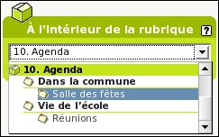
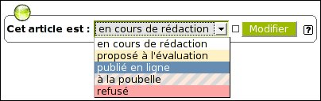

- Entrez dans l'interface d'administration
- Cliquez sur
ou sélectionner l'article à modifier [1]
et cliquez sur

- Sélectionnez
la rubrique dans laquelle vous voulez placer votre article. C'est aussi
par ce même procédé que l'on peut changer (plus tard)
un article de rubrique.
- Dans la page d'édition de l'article, remplissez les différents champs : titre (=obligatoire), descriptif, texte, ... en utilisant : les raccourcis typographiques pour formater votre texte.
- Lorsque votre article est prêt, cliquez sur [Valider] (en bas de page).
- Maintenant que votre article est créé vous pouvez :
- Joindre un document à un article
- Placer une image dans un article
- Si votre article est fini, cliquez sur , ou si vous êtes administrateur vous pouvez le publier directement :
 Sélectionnez "publié en ligne", puis cliquez sur [Modifier] (administrateurs seulement).